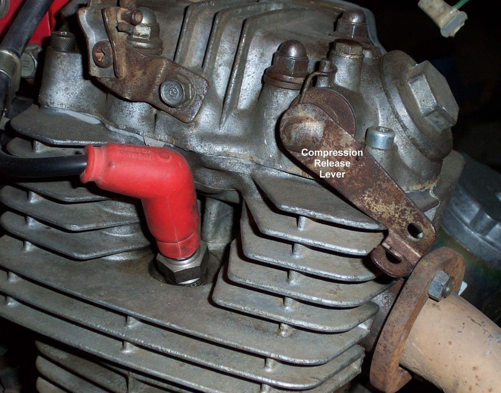
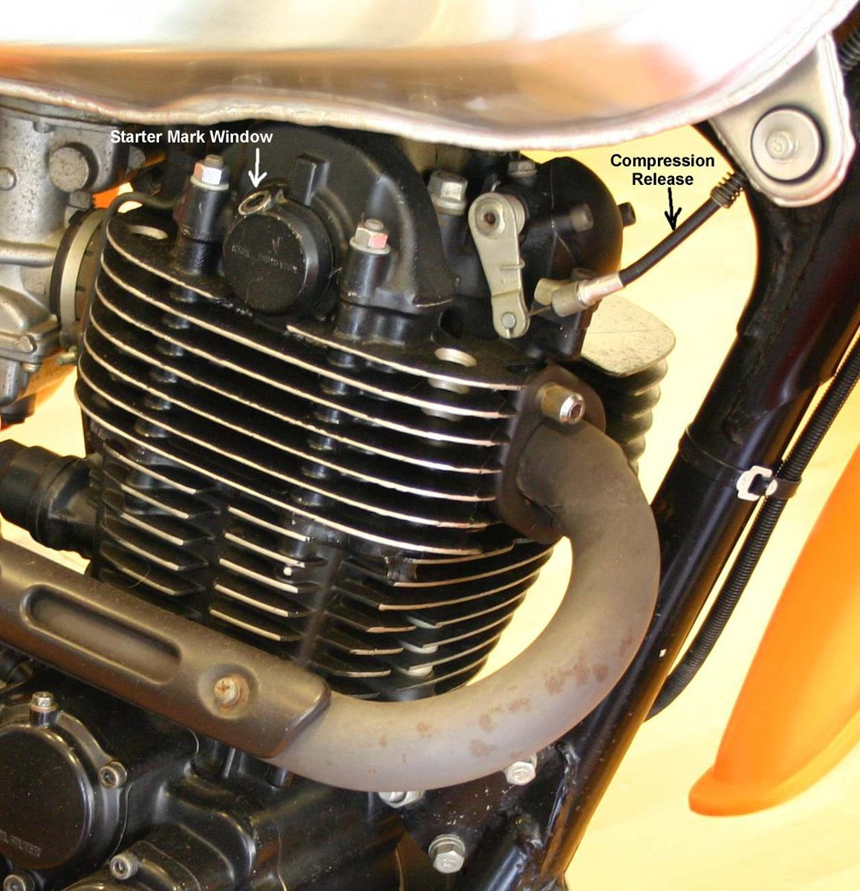

Large single-cylinder engines have high compression and kick back if started at the wrong point in the stroke. A compression release lets the piston pass the hard point. When an electric starter fails and there is no kickstart, a push start is the only option.
Safety
- Wear boots and keep fingers clear of the clutch lever and chain.
- A kick back can twist the ankle. Use a firm foot position and do not stand over the lever.
- Push start only on a clear, level or slightly downhill road with no traffic.
Kick start a big single with a compression release
- Turn fuel and ignition on and set the choke as for a cold engine: Start a cold carburettor engine.
- Push the kick lever slowly until the engine comes up against compression and the lever feels firm.
- Pull the manual compression release lever and push the kick lever on until it just passes the top of the compression stroke.
- Release the lever. Give one hard, full kick.
- If it does not start, repeat from step 2.
- Some older engines have a kick indicator window and marker on the camshaft end. Line up the marker, then kick.
- Many newer big singles have an automatic compression release that works by itself when kicked. Others have one fitted to the camshaft and use only an electric starter.
Push start (no kickstart, starter failed)
- Select second gear and turn the ignition on. Set choke and throttle as for a cold start.
- Pull the bike backwards with the clutch lever released. The rear wheel stops as the engine reaches compression. This puts the piston near the right point.
- Pull the clutch lever in and push the bike forward as fast as you can.
- When running fast, sit on the bike and let the clutch out smoothly.
- If it starts, pull the clutch lever in and keep the revs up with the throttle. If not, stop and try again.
- Downhill is easier than flat ground.
Check your work
- The engine runs without kick back and holds idle.
- Afterward, find out why the starter failed: Starter motor clicks or does not turn or Battery goes flat.
If it did not fix the problem
- Kick lever very hard or will not turn: Kick lever is very hard.
- Check the release works: Check the compression release.